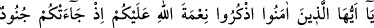
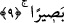

“Yalnız senin için amel ettik ve yalnız seni istedik.” derler. Allah: “Doğru söylediniz.”
buyurur. Allâh’ın izzetine yemin olsun ki müşâhede makamında Allâh’ın onlara “Doğru
söylediniz.” buyurması onların yanında cennet nîmetlerinden daha lezzetlidir.
Sevgilinin sözünün tatlılığının lezzeti (büyük bir) lezzettir,
Canın özünden çıkmayan söz ise lâf kalabalığıdır.
Keşfü’l-esrâr’da der ki: Hz. Peygamber’e (a.s.): ”Kemâlât yâni olgunluk hangi
şeydedir?” diye sordular. “Doğru söylemek ve doğru iş yapmaktır” diye cevap verdi.
Demişlerdir ki: Doğruluk iki derecedir. Birisi zâhirî, diğeri bâtınî doğruluk. Zâhirî
doğruluk da üç şeyledir: Dinî konularda sıkı ve tâvizsiz olmak, hizmette sünnete tâbi
olmak ve dünyevî işlerde Allah korkusu. Bâtınî doğruluk da üç şeyle olur: Söylediğin
şeyi yapman, gösterdiğin şeye sahip olman (göründüğün gibi olman), sahip olduğun şeyi
de vermen ve ikram etmendir.”
Hz. Şeyh-i Ekber (k.s.) der ki: “Yüzlerin kararması, gıybet ve söz taşıma gibi mekruh
ve sevimsiz gerçeklerdendir. Doğru bile olsa sırrı ifşâ etmek yerilmiştir. İşte onun için
Allah Teâlâ “Allah bu sözü doğruları doğruluklarıyla sorumlu kılmak (doğruluklarını
sormak)” yâni onlara sırrı ifşâ etmeye izin verip vermediğini sormak “için aldı”
buyurmuştur. Öyleyse her sıdk/doğruluk hak değildir.”
9. Ey îman edenler! Allâh’ın size olan nîmetini hatırlayın; hani size ordular
saldırmıştı da, biz onlara karşı bir rüzgâr ve sizin görmediğiniz ordular
göndermiştik. Allah ne yaptığınızı çok iyi görmekteydi.
Rivâyete göre Peygamberimiz (s.a.) Medine’ye hicret ettiklerinde Kurayza oğulları ve
Nadîr oğulları yahudileri ile bir anlaşma imzalayarak aleyhte olmayıp destek
olacaklarına dâir onlardan söz aldı. Ancak Hayber yahûdilerinden bir kabile olan Nadîr
oğulları sözlerinden döndüler. Onlar Zühre denilen köyde ikamet ederlerdi. Rasûlullah
(a.s.) yanında halîfeleri olduğu halde bir ihtiyaç için onlara gitti. Onların evlerinden
birinin duvarının dibine oturdu. O’nu öldürmek istediler. Hatta bazıları O’nun üzerine
büyük bir taş atıp öldürmek için evin damına çıktı. Bunun üzerine onların yapmak
istedikleri bu işle ilgili O’na vahiy geldi. Hemen oradan kalkıp Medine’ye döndü.[173]
Onlar böylece ahdi/sözleşmeyi bozunca Rasûlullah (s.a.) “Benim beldemden, yâni
Medine’den çıkın.” diye onlara bildirmek üzere Muhammed b. Mesleme (r.a.)’ı